lsqfit - Nonlinear Least Squares Fitting¶
Introduction¶
This package contains tools for nonlinear least-squares curve fitting of data. In general a fit has four inputs:
- The dependent data y that is to be fit — typically y is a Python dictionary in an lsqfit analysis. Its values y[k] are either gvar.GVars or arrays (any shape or dimension) of gvar.GVars that specify the values of the dependent variables and their errors.
- A collection x of independent data — x can have any structure and contain any data (or no data).
- A fit function f(x, p) whose parameters p are adjusted by the fit until f(x, p) equals y to within ys errors — parameters p` are usually specified by a dictionary whose values p[k] are individual parameters or (numpy) arrays of parameters. The fit function is assumed independent of x (that is, f(p)) if x = False (or if x is omitted from the input data).
- Initial estimates or priors for each parameter in p — priors are usually specified using a dictionary prior whose values prior[k] are gvar.GVars or arrays of gvar.GVars that give initial estimates (values and errors) for parameters p[k].
A typical code sequence has the structure:
... collect x, y, prior ...
def f(x, p):
... compute fit to y[k], for all k in y, using x, p ...
... return dictionary containing the fit values for the y[k]s ...
fit = lsqfit.nonlinear_fit(data=(x, y), prior=prior, fcn=f)
print(fit) # variable fit is of type nonlinear_fit
The parameters p[k] are varied until the chi**2 for the fit is minimized.
The best-fit values for the parameters are recovered after fitting using, for example, p=fit.p. Then the p[k] are gvar.GVars or arrays of gvar.GVars that give best-fit estimates and fit uncertainties in those estimates. The print(fit) statement prints a summary of the fit results.
The dependent variable y above could be an array instead of a dictionary, which is less flexible in general but possibly more convenient in simpler fits. Then the approximate y returned by fit function f(x, p) must be an array with the same shape as the dependent variable. The prior prior could also be represented by an array instead of a dictionary.
The lsqfit tutorial contains extended explanations and examples.
Formal Background¶
The formal structure structure of a least-squares problem involves
fitting input data 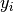 with functions  by adjusting
fit parameters
by adjusting
fit parameters  to minimize
to minimize
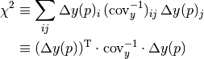
where  is the covariance matrix for the input data
and
is the covariance matrix for the input data
and
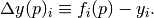
There are generally two types of input data — actual data and
prior information for each fit parameter — but we lump these together
here since they enter in the same way (that is, the sums over  and
and  are over all data and priors).
are over all data and priors).
The best-fit values  for the fit parameters are those
that minimize 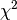:
for the fit parameters are those
that minimize 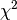:
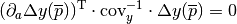
where the derivatives are 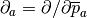. The covariance matrix 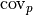 for these is obtained (approximately) from

Consequently the variance for any function 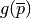 of the best-fit parameters is given by (approximately)
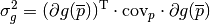
The definition of the covariance matrix implies that it and any variance
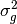 derived from it depend linearly (approximately) on the
elements of the input data covariance matrix , at
least when errors are small:
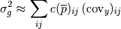
This allows us to associate different portions of the output error
with different parts of the input error
, creating an “error budget” for
.
Such information helps pinpoint the input errors that most affect the
output errors for any particular quantity ,
and also indicates how those output errors might change for a given change
in input error.
The relationship between the input and output errors is only approximately linear because the coefficients in the expansion depend upon the best-fit values for the parameters, and these depend upon the input errors — but only weakly when errors are small. Neglecting such variation in the parameters, the error budget for any quantity is easily computed using

where
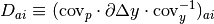
and, trivially,
 .
.
This last formula suggests that
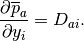
This relationship is true in the limit of small errors, as is easily derived
from the minimum condition for the fit, which defines (implicitly)
 : Differentiating with respect to
we obtain
: Differentiating with respect to
we obtain

where we have ignored terms suppressed by a factor of 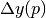. This leads immediately to the relationship above.
The data’s covariance matrix is sometimes rather
singular, making it difficult to invert. This problem is dealt with using
an SVD cut: the covariance matrix is diagonalized, some number of the
smallest (and therefore least-well determined) eigenvalues and their
eigenvectors are discarded, and the inverse matrix is reconstituted from
the eigenmodes that remain. (Instead of discarding modes one can replace
their eigenvalues by the smallest eigenvalue that is retained; this is less
conservative and usually leads to more accurate results.)
nonlinear_fit Objects¶
- class lsqfit.nonlinear_fit(data, fcn, prior=None, p0=None, svdcut=1e-15, debug=False, **kargs)¶
Nonlinear least-squares fit.
lsqfit.nonlinear_fit fits a (nonlinear) function f(x, p) to data y by varying parameters p, and stores the results: for example,
fit = nonlinear_fit(data=(x, y), fcn=f, prior=prior) # do fit print(fit) # print fit results
The best-fit values for the parameters are in fit.p, while the chi**2, the number of degrees of freedom, the logarithm of Gaussian Bayes Factor, the number of iterations, and the cpu time needed for the fit are in fit.chi2, fit.dof, fit.logGBF, fit.nit, and fit.time, respectively. Results for individual parameters in fit.p are of type gvar.GVar, and therefore carry information about errors and correlations with other parameters. The fit data and prior can be recovered using fit.x (equals False if there is no x), fit.y, and fit.prior; the data and prior are corrected for the svd cut, if there is one (that is, their covariance matrices have been modified in accordance with the svd cut).
Parameters: - data –
Data to be fit by lsqfit.nonlinear_fit. It can have any of the following formats:
- data = x, y
- x is the independent data that is passed to the fit function with the fit parameters: fcn(x, p). y is a dictionary (or array) of gvar.GVars that encode the means and covariance matrix for the data that is to be fit being fit. The fit function must return a result having the same layout as y.
- data = y
- y is a dictionary (or array) of gvar.GVars that encode the means and covariance matrix for the data being fit. There is no independent data so the fit function depends only upon the fit parameters: fit(p). The fit function must return a result having the same layout as y.
- data = x, ymean, ycov
- x is the independent data that is passed to the fit function with the fit parameters: fcn(x, p). ymean is an array containing the mean values of the fit data. ycov is an array containing the covariance matrix of the fit data; ycov.shape equals 2*ymean.shape. The fit function must return an array having the same shape as ymean.
- data = x, ymean, ysdev
- x is the independent data that is passed to the fit function with the fit parameters: fcn(x, p). ymean is an array containing the mean values of the fit data. ysdev is an array containing the standard deviations of the fit data; ysdev.shape equals ymean.shape. The data are assumed to be uncorrelated. The fit function must return an array having the same shape as ymean.
Setting x=False in the first, third or fourth of these formats implies that the fit function depends only on the fit parameters: that is, fcn(p) instead of fcn(x, p). (This is not assumed if x=None.)
- fcn (function) – The function to be fit to data. It is either a function of the independent data x and the fit parameters p (fcn(x, p)), or a function of just the fit parameters (fcn(p)) when there is no x data or x=False. The parameters are tuned in the fit until the function returns values that agree with the y data to within the ys’ errors. The function’s return value must have the same layout as the y data (a dictionary or an array). The fit parameters p are either: 1) a dictionary where each p[k] is a single parameter or an array of parameters (any shape); or, 2) a single array of parameters. The layout of the parameters is the same as that of prior prior if it is specified; otherwise, it is inferred from of the starting value p0 for the fit.
- prior (dictionary, array, or None) – A dictionary (or array) containing a priori estimates for all parameters p used by fit function fcn(x, p) (or fcn(p)). Fit parameters p are stored in a dictionary (or array) with the same keys and structure (or shape) as prior. The default value is None; prior must be defined if p0 is None.
- p0 (dictionary, array, string or None) – Starting values for fit parameters in fit. lsqfit.nonlinear_fit adjusts p0 to make it consistent in shape and structure with prior when the latter is specified: elements missing from p0 are filled in using prior, and elements in p0 that are not in prior are discarded. If p0 is a string, it is taken as a file name and lsqfit.nonlinear_fit attempts to read starting values from that file; best-fit parameter values are written out to the same file after the fit (for priming future fits). If p0 is None or the attempt to read the file fails, starting values are extracted from prior. The default value is None; p0 must be defined if prior is None.
- svdcut (None or float) – If svdcut is nonzero (not None), svd cuts are applied to every block-diagonal sub-matrix of the covariance matrix for the data y and prior (if there is a prior). The blocks are first rescaled so that all diagonal elements equal 1 – that is, the blocks are replaced by the correlation matrices for the corresponding subsets of variables. Then, if svdcut > 0, eigenvalues of the rescaled matrices that are smaller than svdcut times the maximum eigenvalue are replaced by svdcut times the maximum eigenvalue. This makes the covariance matrix less singular and less susceptible to roundoff error. When svdcut < 0, eigenvalues smaller than |svdcut| times the maximum eigenvalue are discarded and the corresponding components in y and prior are zeroed out.
- debug (boolean) – Set to True for extra debugging of the fit function and a check for roundoff errors. (Default is False.)
- fitterargs – Dictionary of arguments passed on to lsqfit.multifit, which does the fitting.
The results from the fit are accessed through the following attributes (of fit where fit = nonlinear_fit(...)):
- chi2¶
The minimum chi**2 for the fit. fit.chi2 / fit.dof is usually of order one in good fits; values much less than one suggest that the actual standard deviations in the input data and/or priors are smaller than the standard deviations used in the fit.
- cov¶
Covariance matrix of the best-fit parameters from the fit.
- dof¶
Number of degrees of freedom in the fit, which equals the number of pieces of data being fit when priors are specified for the fit parameters. Without priors, it is the number of pieces of data minus the number of fit parameters.
- logGBF¶
The logarithm of the probability (density) of obtaining the fit data by randomly sampling the parameter model (priors plus fit function) used in the fit. This quantity is useful for comparing fits of the same data to different models, with different priors and/or fit functions. The model with the largest value of fit.logGBF is the one prefered by the data. The exponential of the difference in fit.logGBF between two models is the ratio of probabilities (Bayes factor) for those models. Differences in fit.logGBF smaller than 1 are not very significant. Gaussian statistics are assumed when computing fit.logGBF.
- p¶
Best-fit parameters from fit. Depending upon what was used for the prior (or p0), it is either: a dictionary (gvar.BufferDict) of gvar.GVars and/or arrays of gvar.GVars; or an array (numpy.ndarray) of gvar.GVars. fit.p represents a multi-dimensional Gaussian distribution which, in Bayesian terminology, is the posterior probability distribution of the fit parameters.
- pmean¶
Means of the best-fit parameters from fit (dictionary or array).
- psdev¶
Standard deviations of the best-fit parameters from fit (dictionary or array).
- palt¶
Same as fit.p except that the errors are computed directly from fit.cov. This is faster but means that no information about correlations with the input data is retained (unlike in fit.p); and, therefore, fit.palt cannot be used to generate error budgets. fit.p and fit.palt give the same means and normally give the same errors for each parameter. They differ only when the input data’s covariance matrix is too singular to invert accurately (because of roundoff error), in which case an SVD cut is advisable.
- transformed_p¶
Same as fit.p but augmented to include the transforms of any log-normal or other parameter implemented using decorator lsqfit.transform_p. In the case of a log-normal variable fit.p['logXX'], for example, fit.transformed_p['XX'] is defined equal to exp(fit.p['logXX']).
- p0¶
The parameter values used to start the fit.
- Q¶
The probability that the chi**2 from the fit could have been larger, by chance, assuming the best-fit model is correct. Good fits have Q values larger than 0.1 or so. Also called the p-value of the fit.
- svdcorrection¶
An array containing the (flattened) SVD corrections, if any, added to the fit data y and the prior prior.
- svdn¶
The number of eignemodes modified (and/or deleted) by the SVD cut.
- nblocks¶
A dictionary where nblocks[s] equals the number of block-diagonal sub-matrices of the y–prior covariance matrix that are size s-by-s. This is sometimes useful for debugging.
- time¶
CPU time (in secs) taken by fit.
The input parameters to the fit can be accessed as attributes. Note in particular attributes:
- prior¶
Prior used in the fit. This may differ from the input prior if an SVD cut is used. It is either a dictionary (gvar.BufferDict) or an array (numpy.ndarray), depending upon the input. Equals None if no prior was specified.
- x¶
The first field in the input data. This is sometimes the independent variable (as in ‘y vs x’ plot), but may be anything. It is set equal to False if the x field is omitted from the input data. (This also means that the fit function has no x argument: so f(p) rather than f(x,p).)
- y¶
Fit data used in the fit. This may differ from the input data if an SVD cut is used. It is either a dictionary (gvar.BufferDict) or an array (numpy.ndarray), depending upon the input.
Additional methods are provided for printing out detailed information about the fit, testing fits with simulated data, doing bootstrap analyses of the fit errors, dumping (for later use) and loading parameter values, and checking for roundoff errors in the final error estimates:
- format(maxline=0, pstyle='v')¶
Formats fit output details into a string for printing.
The output tabulates the chi**2 per degree of freedom of the fit (chi2/dof), the number of degrees of freedom, the logarithm of the Gaussian Bayes Factor for the fit (logGBF), and the number of fit-algorithm iterations needed by the fit. Optionally, it will also list the best-fit values for the fit parameters together with the prior for each (in [] on each line). It can also list all of the data and the corresponding values from the fit. At the end it lists the SVD cut, the number of eigenmodes modified by the SVD cut, the relative and absolute tolerances used in the fit, and the time in seconds needed to do the fit.
Parameters: - maxline (integer or bool) – Maximum number of data points for which fit results and input data are tabulated. maxline<0 implies that only chi2, Q, logGBF, and itns are tabulated; no parameter values are included. Setting maxline=True prints all data points; setting it equal None or False is the same as setting it equal to -1. Default is maxline=0.
- pstyle (‘vv’, ‘v’, or ‘m’) – Style used for parameter list. Supported values are ‘vv’ for very verbose, ‘v’ for verbose, and ‘m’ for minimal. When ‘m’ is set, only parameters whose values differ from their prior values are listed.
Returns: String containing detailed information about fit.
- fmt_errorbudget(outputs, inputs, ndecimal=2, percent=True)¶
Tabulate error budget for outputs[ko] due to inputs[ki].
For each output outputs[ko], fmt_errorbudget computes the contributions to outputs[ko]‘s standard deviation coming from the gvar.GVars collected in inputs[ki]. This is done for each key combination (ko,ki) and the results are tabulated with columns and rows labeled by ko and ki, respectively. If a gvar.GVar in inputs[ki] is correlated with other gvar.GVars, the contribution from the others is included in the ki contribution as well (since contributions from correlated gvar.GVars cannot be resolved). The table is returned as a string.
Parameters: - outputs – Dictionary of gvar.GVars for which an error budget is computed.
- inputs – Dictionary of: gvar.GVars, arrays/dictionaries of gvar.GVars, or lists of gvar.GVars and/or arrays/dictionaries of gvar.GVars. fmt_errorbudget tabulates the parts of the standard deviations of each outputs[ko] due to each inputs[ki].
- ndecimal (int) – Number of decimal places displayed in table.
- percent (boolean) – Tabulate % errors if percent is True; otherwise tabulate the errors themselves.
- colwidth (positive integer) – Width of each column.
Returns: A table (str) containing the error budget. Output variables are labeled by the keys in outputs (columns); sources of uncertainty are labeled by the keys in inputs (rows).
- fmt_values(outputs, ndecimal=None)¶
Tabulate gvar.GVars in outputs.
Parameters: - outputs – A dictionary of gvar.GVar objects.
- ndecimal (int or None) – Format values v using v.fmt(ndecimal).
Returns: A table (str) containing values and standard deviations for variables in outputs, labeled by the keys in outputs.
- simulated_fit_iter(n=None, pexact=None, **kargs)¶
Iterator that returns simulation copies of a fit.
Fit reliability can be tested using simulated data which replaces the mean values in self.y with random numbers drawn from a distribution whose mean equals self.fcn(pexact) and whose covariance matrix is the same as self.y‘s. Simulated data is very similar to the original fit data, self.y, but corresponds to a world where the correct values for the parameters (i.e., averaged over many simulated data sets) are given by pexact. pexact is usually taken equal to fit.pmean.
Each iteration of the iterator creates new simulated data, with different random numbers, and fits it, returning the the lsqfit.nonlinear_fit that results. The simulated data has the same covariance matrix as fit.y. Typical usage is:
... fit = nonlinear_fit(...) ... for sfit in fit.simulated_fit_iter(n=3): ... verify that sfit.p agrees with pexact=fit.pmean within errors ...
Only a few iterations are needed to get a sense of the fit’s reliability since we know the correct answer in each case. The simulated fit’s output results should agree with pexact (=fit.pmean here) within the simulated fit’s errors.
Simulated fits can also be used to estimate biases in the fit’s output parameters or functions of them, should non-Gaussian behavior arise. This is possible, again, because we know the correct value for every parameter before we do the fit. Again only a few iterations may be needed for reliable estimates.
The (possibly non-Gaussian) probability distributions for parameters, or functions of them, can be explored in more detail by setting option bootstrap=True and collecting results from a large number of simulated fits. With bootstrap=True, the means of the priors are also varied from fit to fit, as in a bootstrap simulation; the new prior means are chosen at random from the prior distribution. Variations in the best-fit parameters (or functions of them) from fit to fit define the probability distributions for those quantities. For example, one would use the following code to analyze the distribution of function g(p) of the fit parameters:
fit = nonlinear_fit(...) ... glist = [] for sfit in fit.simulated_fit_iter(n=100, bootstrap=True): glist.append(g(sfit.pmean)) ... analyze samples glist[i] from g(p) distribution ...
This code generates n=100 samples glist[i] from the probability distribution of g(p). If everything is Gaussian, the mean and standard deviation of glist[i] should agree with g(fit.p).mean and g(fit.p).sdev.
The only difference between simulated fits with bootstrap=True and bootstrap=False (the default) is that the prior means are varied. It is essential that they be varied in a bootstrap analysis since one wants to capture the impact of the priors on the final distributions, but it is not necessary and probably not desirable when simply testing a fit’s reliability.
Parameters: - n (integer or None) – Maximum number of iterations (equals infinity if None).
- pexact (None or array or dictionary of numbers) – Fit-parameter values for the underlying distribution used to generate simulated data; replaced by self.pmean if is None (default).
- bootstrap (bool) – Vary prior means if True; otherwise vary only the means in self.y (default).
Returns: An iterator that returns lsqfit.nonlinear_fits for different simulated data.
Note that additional keywords can be added to overwrite keyword arguments in lsqfit.nonlinear_fit.
- bootstrap_iter(n=None, datalist=None)¶
Iterator that returns bootstrap copies of a fit.
A bootstrap analysis involves three steps: 1) make a large number of “bootstrap copies” of the original input data and prior that differ from each other by random amounts characteristic of the underlying randomness in the original data; 2) repeat the entire fit analysis for each bootstrap copy of the data, extracting fit results from each; and 3) use the variation of the fit results from bootstrap copy to bootstrap copy to determine an approximate probability distribution (possibly non-gaussian) for the fit parameters and/or functions of them: the results from each bootstrap fit are samples from that distribution.
Bootstrap copies of the data for step 2 are provided in datalist. If datalist is None, they are generated instead from the means and covariance matrix of the fit data (assuming gaussian statistics). The maximum number of bootstrap copies considered is specified by n (None implies no limit).
Variations in the best-fit parameters (or functions of them) from bootstrap fit to bootstrap fit define the probability distributions for those quantities. For example, one could use the following code to analyze the distribution of function g(p) of the fit parameters:
fit = nonlinear_fit(...) ... glist = [] for sfit in fit.bootstrapped_fit_iter(n=100, datalist=datalist, bootstrap=True): glist.append(g(sfit.pmean)) ... analyze samples glist[i] from g(p) distribution ...
This code generates n=100 samples glist[i] from the probability distribution of g(p). If everything is Gaussian, the mean and standard deviation of glist[i] should agree with g(fit.p).mean and g(fit.p).sdev.
Parameters: - n (integer) – Maximum number of iterations if n is not None; otherwise there is no maximum.
- datalist (sequence or iterator or None) – Collection of bootstrap data sets for fitter.
Returns: Iterator that returns an lsqfit.nonlinear_fit object containing results from the fit to the next data set in datalist
- dump_p(filename)¶
Dump parameter values (fit.p) into file filename.
fit.dump_p(filename) saves the best-fit parameter values (fit.p) from a nonlinear_fit called fit. These values are recovered using p = nonlinear_fit.load_parameters(filename) where p‘s layout is the same as that of fit.p.
- dump_pmean(filename)¶
Dump parameter means (fit.pmean) into file filename.
fit.dump_pmean(filename) saves the means of the best-fit parameter values (fit.pmean) from a nonlinear_fit called fit. These values are recovered using p0 = nonlinear_fit.load_parameters(filename) where p0‘s layout is the same as fit.pmean. The saved values can be used to initialize a later fit (nonlinear_fit parameter p0).
- static load_parameters(filename)¶
Load parameters stored in file filename.
p = nonlinear_fit.load_p(filename) is used to recover the values of fit parameters dumped using fit.dump_p(filename) (or fit.dump_pmean(filename)) where fit is of type lsqfit.nonlinear_fit. The layout of the returned parameters p is the same as that of fit.p (or fit.pmean).
- check_roundoff(rtol=0.25, atol=1e-6)¶
Check for roundoff errors in fit.p.
Compares standard deviations from fit.p and fit.palt to see if they agree to within relative tolerance rtol and absolute tolerance atol. Generates a warning if they do not (in which case an svd cut might be advisable).
- data –
Functions¶
- lsqfit.empbayes_fit(z0, fitargs, **minargs)¶
Call lsqfit.nonlinear_fit(**fitargs(z)) varying z, starting at z0, to maximize logGBF (empirical Bayes procedure).
The fit is redone for each value of z that is tried, in order to determine logGBF.
Parameters: - z0 (array) – Starting point for search.
- fitargs (function) – Function of array z that determines which fit parameters to use. The function returns these as an argument dictionary for lsqfit.nonlinear_fit().
- minargs (dictionary) – Optional argument dictionary, passed on to lsqfit.multiminex, which finds the minimum.
Returns: A tuple containing the best fit (object of type lsqfit.nonlinear_fit) and the optimal value for parameter z.
- lsqfit.wavg(dataseq, prior=None, fast=False, **kargs)¶
Weighted average of gvar.GVars or arrays/dicts of gvar.GVars.
The weighted average of several gvar.GVars is what one obtains from a least-squares fit of the collection of gvar.GVars to the one-parameter fit function
def f(p): return N * [p[0]]
where N is the number of gvar.GVars. The average is the best-fit value for p[0]. gvar.GVars with smaller standard deviations carry more weight than those with larger standard deviations. The averages computed by wavg take account of correlations between the gvar.GVars.
If prior is not None, it is added to the list of data used in the average. Thus wavg([x2, x3], prior=x1) is the same as wavg([x1, x2, x3]).
Typical usage is
x1 = gvar.gvar(...) x2 = gvar.gvar(...) x3 = gvar.gvar(...) xavg = wavg([x1, x2, x3]) # weighted average of x1, x2 and x3
where the result xavg is a gvar.GVar containing the weighted average.
The individual gvar.GVars in the last example can be replaced by multidimensional distributions, represented by arrays of gvar.GVars or dictionaries of gvar.GVars (or arrays of gvar.GVars). For example,
x1 = [gvar.gvar(...), gvar.gvar(...)] x2 = [gvar.gvar(...), gvar.gvar(...)] x3 = [gvar.gvar(...), gvar.gvar(...)] xavg = wavg([x1, x2, x3]) # xavg[i] is wgtd avg of x1[i], x2[i], x3[i]
where each array x1, x2 ... must have the same shape. The result xavg in this case is an array of gvar.GVars, where the shape of the array is the same as that of x1, etc.
Another example is
x1 = dict(a=[gvar.gvar(...), gvar.gvar(...)], b=gvar.gvar(...)) x2 = dict(a=[gvar.gvar(...), gvar.gvar(...)], b=gvar.gvar(...)) x3 = dict(a=[gvar.gvar(...), gvar.gvar(...)]) xavg = wavg([x1, x2, x3]) # xavg['a'][i] is wgtd avg of x1['a'][i], x2['a'][i], x3['a'][i] # xavg['b'] is gtd avg of x1['b'], x2['b']
where different dictionaries can have (some) different keys. Here the result xavg is a gvar.BufferDict` having the same keys as x1, etc.
Weighted averages can become costly when the number of random samples being averaged is large (100s or more). In such cases it might be useful to set parameter fast=True. This causes wavg to estimate the weighted average by incorporating the random samples one at a time into a running average:
result = prior for dataseq_i in dataseq: result = wavg([result, dataseq_i], ...)
This method is much faster when len(dataseq) is large, and gives the exact result when there are no correlations between different elements of list dataseq. The results are approximately correct when dataseq[i] and dataseq[j] are correlated for i!=j.
Parameters: - dataseq – The gvar.GVars to be averaged. dataseq is a one-dimensional sequence of gvar.GVars, or of arrays of gvar.GVars, or of dictionaries containing gvar.GVars or arrays of gvar.GVars. All dataseq[i] must have the same shape.
- prior (gvar.GVar or array/dictionary of gvar.GVars) – Prior values for the averages, to be included in the weighted average. Default value is None, in which case prior is ignored.
- fast (bool) – Setting fast=True causes wavg to compute an approximation to the weighted average that is much faster to calculate when averaging a large number of samples (100s or more). The default is fast=False.
- kargs (dict) – Additional arguments (e.g., svdcut) to the fitter used to do the averaging.
The following function attributes are also set:
- wavg.chi2¶
chi**2 for weighted average.
- wavg.dof¶
Effective number of degrees of freedom.
- wavg.Q¶
The probability that the chi**2 could have been larger, by chance, assuming that the data are all Gaussain and consistent with each other. Values smaller than 0.1 or suggest that the data are not Gaussian or are inconsistent with each other. Also called the p-value.
Quality factor Q (or p-value) for fit.
- wavg.time¶
Time required to do average.
- wavg.svdcorrection¶
The svd corrections made to the data when svdcut is not None.
- wavg.fit¶
Fit output from average.
These same attributes are also attached to the output gvar.GVar, array or dictionary from gvar.wavg().
- lsqfit.gammaQ()¶
Return the normalized incomplete gamma function Q(a,x) = 1-P(a,x).
Q(a, x) = 1/Gamma(a) * \int_x^\infty dt exp(-t) t ** (a-1) = 1 - P(a, x)
Note that gammaQ(ndof/2., chi2/2.) is the probabilty that one could get a chi**2 larger than chi2 with ndof degrees of freedom even if the model used to construct chi2 is correct.
Utility Classes¶
- class lsqfit.transform_p(priorkeys, has_x=False)¶
Decorate fit function to allow log/sqrt-normal priors.
This decorator can be applied to fit functions whose parameters are stored in a dictionary-like object. It searches the parameter keys for string-valued keys of the form "log(XX)", "logXX", "sqrt(XX)", or "sqrtXX" where "XX" is an arbitrary string. For each such key it adds a new entry to the parameter dictionary with key "XX" where:
p["XX"] = exp(p[k]) for k = "log(XX)" or "logXX"
or
p["XX"] = p[k] ** 2 for k = "sqrt(XX)" or "sqrtXX"
This means that the fit function can be expressed entirely in terms of p["XX"] even if the actual fit parameter is the logarithm or square root of that quantity. Since fit parameters have gaussian/normal priors, p["XX"] has a log-normal or “sqrt-normal” distribution in the first or second cases above, respectively. In either case p["XX"] is guaranteed to be postiive.
This is a convenience function. It allows for the rapid replacement of a fit parameter by its logarithm or square root without having to rewrite the fit function — only the prior need be changed. The decorator needs to be told if the fit function has an x as its first argument, followed by the parameters p:
@lsqfit.transform_p(prior.keys(), has_x=True) def fitfcn(x, p): ...
versus
@lsqfit.transform_p(prior.keys()) def fitfcn(p): ...
A list of the specific keys that need transforming can be used instead of the list of all keys (prior.keys()). The decorator assigns a copy of itself to the function as an attribute: fitfcn.transform_p.
Parameters: - priorkeys (sequence) – The keys in the prior that are to be tranformed. Other keys can be in priorkeys provided they do not begin with 'log' or 'sqrt' — they are ignored.
- has_x – Set equal to True if the fit function is a function of x and parameters p (i.e., f(x,p)). Set equal to False if the fit function is a function only of the parameters (i.e., f(p)). Default is False.
- pkey (string or None) – Name of the parameters-variable in the argument keyword dictionary of the fit function. Default value is None; one of pkey or pindex must be specified (i.e., not None), unless the fit function has only a single argument.
- transform(p)¶
Create transformed copy of dictionary p.
Create a copy of parameter-dictionary p that includes new entries for each "logXX", etc entry corresponding to "XX". The values in p can be any type that supports logarithms, exponentials, and arithmetic.
- untransform(p)¶
Undo self.transform(p).
Reconstruct p0 where p == self.transform(p0); that is remove entries for keys "XX" that were added by by transform_p.transform() (because "logXX" or "sqrtXX" or ... appeared in p0).
- static paramkey(k)¶
Return parameter key corresponding to prior-key k.
Strip off any "log" or "sqrt" prefix.
- static priorkey(prior, k)¶
Return key in prior corresponding to k.
Add in "log" or "sqrt" as needed to find a key in prior.
- class lsqfit.multifit(x0, n, f, reltol=1e-4, abstol=0, maxit=1000, alg='lmsder', analyzer=None)¶
Fitter for nonlinear least-squares multidimensional fits.
Parameters: - x0 (numpy array of floats) – Starting point for minimization.
- n (positive integer) – Length of vector returned by the fit function f(x).
- f (function) – Fit function: multifit minimizes sum_i f_i(x)**2 by varying parameters x. The parameters are a 1-d numpy array of either numbers or gvar.GVars.
- reltol (float) – The fit stops when |dx_i| < abstol + reltol * |x_i|; default value is 1e-4.
- abstol (float) – The fit stops when |dx_i| < abstol + reltol * |x_i|; default value is 0.0.
- maxit (integer) – Maximum number of iterations in search for minimum; default is 1000.
- alg (string) – GSL algorithm to use for minimization. Two options are currently available: "lmsder", the scaled LMDER algorithm (default); and "lmder", the unscaled LMDER algorithm.
- analyzer (function) – Optional function of x, [...f_i(x)...], [[..df_ij(x)..]] which is called after each iteration. This can be used to inspect intermediate steps in the minimization, if needed.
multifit is a function-class whose constructor does a least squares fit by minimizing sum_i f_i(x)**2 as a function of vector x. The following attributes are available:
- x¶
Location of the most recently computed (best) fit point.
- cov¶
Covariance matrix at the minimum point.
- f¶
The fit function f(x) at the minimum in the most recent fit.
- J¶
Gradient J_ij = df_i/dx[j] for most recent fit.
- nit¶
Number of iterations used in last fit to find the minimum.
- error¶
None if fit successful; an error message otherwise.
multifit is a wrapper for the multifit GSL routine.
- class lsqfit.multiminex(x0, f, tol=1e-4, maxit=1000, step=1, alg='nmsimplex2', analyzer=None)¶
Minimizer for multidimensional functions.
Parameters: - x0 (numpy array of floats) – Starting point for minimization search.
- f (function) – Function f(x) to be minimized by varying vector x.
- tol (float) – Minimization stops when x has converged to with tolerance tol; default is 1e-4.
- maxit (integer) – Maximum number of iterations in search for minimum; default is 1000.
- step (number) – Initial step size to use in varying components of x; default is 1.
- alg (string) – GSL algorithm to use for minimization. Three options are currently available: "nmsimplex", Nelder Mead Simplex algorithm; "nmsimplex2", an improved version of "nmsimplex" (default); and "nmsimplex2rand", a version of "nmsimplex2" with random shifts in the start position.
- analyzer (function) – Optional function of x, f(x), it, where it is the iteration number, which is called after each iteration. This can be used to inspect intermediate steps in the minimization, if needed.
multiminex is a function-class whose constructor minimizes a multidimensional function f(x) by varying vector x. This routine does not use user-supplied information about the gradient of f(x). The following attributes are available:
- x¶
Location of the most recently computed minimum (1-d array).
- f¶
Value of function f(x) at the most recently computed minimum.
- nit¶
Number of iterations required to find most recent minimum.
- error¶
None if fit successful; an error message otherwise.
multiminex is a wrapper for the multimin GSL routine.